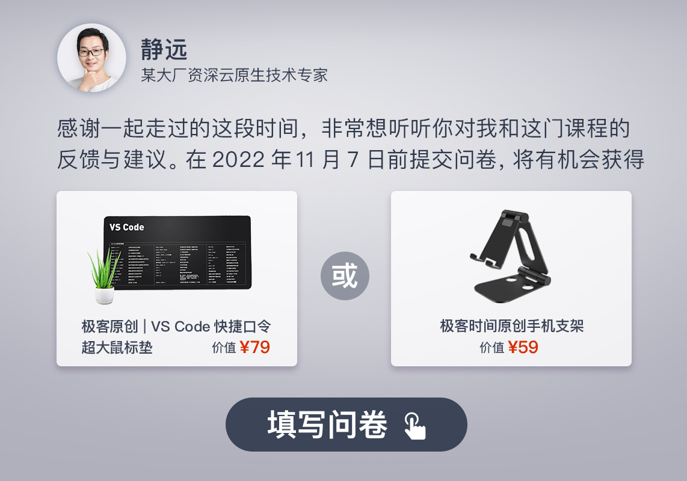

- 00 开篇词 Serverless是降本增效浪潮下的必然选择.md
- 00 思维构建 如何在新赛道下进阶Serverless能力？.md
- 01 生命周期：函数计算的基本流程是如何执行的？.md
- 02 触发器：如何构建事件源与函数计算的纽带？.md
- 03 高级属性：应对生产级别的应用，你需要掌握哪些技能？.md
- 04 冷启动：如何加快函数的第一次调用过程？.md
- 05 扩缩容：如何应对流量的波峰波谷？.md
- 06 流量转发：函数在不同情形下是如何执行的？.md
- 07 运行时（上）：不同语言形态下的函数在容器中是如何执行的？.md
- 08 运行时（下）：不同语言形态下的函数在容器中是如何执行的？.md
- 09 小试牛刀（一）：如何利用函数之间的调用解决业务问题？.md
- 10 小试牛刀（二）：如何突破VPC网络的速度限制？.md
- 11 WebIDE：如何让函数远离繁琐的本地开发模式？.md
- 12 编排：如何协调多任务的运行？.md
- 13 可观测（上）： 如何构建多维度视角下的Serverless监测体系？.md
- 14 可观测（下）： 如何构建多维度视角下的Serverless监测体系？.md
- 15 选型：不同阶段的数据应如何存储？.md
- 16 动手体验（一）：如何实现业务高效率地开发上线？.md
- 17 动手体验（二）：如何在云函数场景下实现一个有状态的服务？.md
- 18 实战指南：Serverless沙场老兵的一线使用经验.md
- 19 实战进阶（一）：Serverless “连接器” 的能力到底有多大？.md
- 20 实战进阶（二）：如何基于智能音箱开发一个BOT技能？.md
- 21 实战进阶（三）：传统的服务如何迁移到Serverless平台？.md
- 22 私有云：赛马时代的Serverless核心引擎谁能胜出？.md
- 23 实战进阶（四）：如何从0到1进阶一个开源引擎？.md
- 24 实战进阶（五）：如何从Serverless引擎蜕变成一个Serverless平台？.md
- 结束语 在实战中把握事物本质，不断革新.md
结束语 在实战中把握事物本质，不断革新
你好，我是静远。
时间过得真快，我们的课程已经接近尾声了。从筹备、上线到今天专栏的完结，历时半年左右的时间。
说实在的，我没想过战线会拉得如此之长。做专栏是一个知识沉淀的过程，需要耗费的心力和精力远超我的预期，课程和制作公众号、PR稿不同，它一定是“治学严谨”“授业解惑”的，我希望对每个知识点都需要高度负责，在构思如何输出之外，还要引入最新的实战技术和经验，并通过实操案例展示出来。
也因此，我特别感谢我的小伙伴“哲哥”非常用心、耐心地和我一起深度Review每一篇文章，有时我们还会找用户和其他专家一起来探讨，扮演不同的角色来提出问题，为了一个课程的打磨，我们经常还会来来回回沟通到后半夜。
但这都是值得的。在课程打磨、留言区解答疑问的同时，我也在不断地成长和完善Serverless这一领域的知识体系。
其实，Serverless的理念，也是在认同和挑战的螺旋迭代中不断向前迈进的。我本人、团队内部、客户和用户以及行业专家讨论时，都会提出诸如“Serverless的路子到底怎样走？”“函数计算目前的形态在N年后是不是非常原始？”“Serverless的治理如何做到更原生？”等等这些问题。
而面对这些不确定性极高的未来，我们能做的只有两点：第一，吃透一个具体的产品技术，不断在实战中理解Serverless的本质；第二，从终局出发，不断地创造新的产品和方案。这两点也是我在Serverless领域践行的法则。
在实战中把握事物本质
这个标题有两个关键词，实战和本质。
先说实战。在实战之前，我们需要从快速迭代技术中选取一片确定性极高的核心区域，例如我们的课程，就是从FaaS形态的Serverless切入学习的。在吃透了这部分的技术原理之后，我们才能更高效地吸收实战经验，快速提升自己的即时战力。而每一次实战，都会反过来促使我们更加贴近技术的本质。正如我们在开篇词中提到的那样，这个闭环让我们最终达到忘形存神、用意不用力的境界。
那Serverless的本质是什么呢？提出Serverless的初心到底是为了什么？
每个人站的角度不一样，出发点不一样，得到的结论也就不一样。
在我看来，用户能够更专注于自己的业务，从而产出更大的社会价值，正是因为Serverless“降本增效”的初心。而在平台方面，它一直在向着更弹性、更易用、更可运维的方向迭代。而我们的一切实战也都是在朝着这个本质迈进。
所以，在你不知道往哪个方向提升自己的时候，不妨回头想想这个技术本身要解决的问题。有了本质的思考后，我们后续做的事情也就不至于跑偏了。
不断革新
不跑偏就是终点了吗？
我们在课程里不止一次提到过“举一反三”。Serverless的内涵一直在不断地外延，我们不能只学习“招式”，如果只是根据知识点来一步一步操作，而不懂得变通，那就说明还没有真正的理解。我们需要在本质和初心之上，发挥更多的想象力，不断革新。
那么，我们具体要怎么做呢？
首先，具备交流意识的学习。在课程里，我也有特意留有思考的地方。有的读者的思考非常好，比如在第3讲中对中控调度服务的理解，在10讲对VPC创建的发问等等。
其次，带有深度思考的工作。比如查看系统的问题时，眼中看到的如果仅仅是日志和报警，最多觉得它是一个BUG，看不出产品的“症结”和客户的内心诉求，这样是不行的。
因此，我们可以这样在工作中多想想症结背后的问题，比如：
客户提出这个业务场景和这个问题，它其实背后真正想要什么?- 那我们下一步该怎么做呢？- 我为什么会这么想呢？还可以怎么做呢？
你可能会觉得第一个问题和自己无关，更多的是产品经理的工作范畴。但这种方式的自问自答，可以促进你对工作进一步的思考。
如果不这样追问，不这样要求自己，那么我们工作的想象力和热情会逐渐消退。这种思考能力的弱化，会妨碍我们创造更有价值的产品。
最后，不受束缚，勇于尝试。我给你分享一个我自身的例子。由于团队人手不够，同时需要兼顾函数计算的公有云、私有化和其他产品的研发，以至于要同时维护多套引擎底座，非常麻烦，团队的同学经常需要“打一枪换一炮”。后来，我们仔细分析研究了几个产品的共性，大胆地改造通用认证和引擎调度系统。结果这样的建设，在后来的弹性应用和容器调度上也同样值得借鉴和复用，一组L型赋能，大大降低了维护成本。
所以，抛弃所谓的常识和教条吧，尤其是站在技术浪潮的前沿，我们更应该倾听好的想法，吸收新的知识，勇于尝试。
希望你在这个专栏中不单单可以系统学习到Serverless的相关知识，还可以利用学到的知识和方法给自己的业务“降本增效”，让自己的加薪升职增加一个不小的筹码。更重要的是，你不会再被既定的一些规则束缚，开始培养新的思考问题的方式，主动进化自己的思维，透过产品抓住技术本质，勇于尝试。
我坚信，在你的加持下，还会有更多Serverless形态的技术和产品发布。
最后，我准备了一份毕业问卷，希望你可以花两分钟的时间填写一下。我会认真倾听你对这个专栏的意见或建议，期待你的反馈。我也会同时保持课程的最新技术更新，再次感谢你选择了我，我们江湖再见。

© 2019 - 2023 Liangliang Lee. Powered by gin and hexo-theme-book.